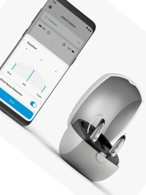
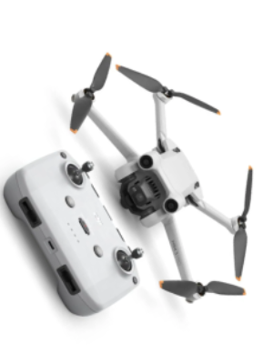
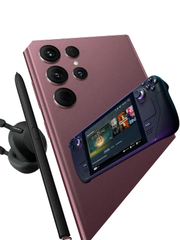

فروشگاه اینترنتی فروشگاه نو، بررسی، انتخاب و خرید آنلاین
یک خرید اینترنتی مطمئن، نیازمند فروشگاهی است که بتواند کالاهایی متنوع، باکیفیت و دارای قیمت مناسب را در مدت زمانی کوتاه به دست مشتریان خود برساند و ضمانت بازگشت کالا هم داشته باشد؛ ویژگیهایی که فروشگاه اینترنتی فروشگاه نو سالهاست بر روی آنها کار کرده و توانسته از این طریق مشتریان ثابت خود را داشته باشد.
یکی از مهمترین دغدغههای کاربران فروشگاه نو یا هر فروشگاه اینترنتی دیگری، این است که کالای خریداری شده چه زمانی به دستشان میرسد. فروشگاه نو شیوههای مختلفی از ارسال را متناسب با فروشنده کالا، مقصد کالا و همچنین نوع کالا در اختیار کاربران خود قرار میدهد. هر یک از روش های ارسال فروشگاه نو شرایط و ویژگیهای خاص خود را دارند که ممکن است گاهی برای کاربران جدید، مبهم و پیچیده به نظر برسند. برای آگاهی بیشتر مشتریان از خدمات فروشگاه نو، این فروشگاه اینترنتی در بخشی از وبسایت خود راهنمای کاملی از شیوههای ارسال را به صورت ساده و به دور از پیچیدگی، قرار داده است که شامل 8 نوع ارسال کالا به روشهای زیر است: ارسال امروز، دریافت حضوری، دریافت از گنجه، ارسال توسط فروشنده، ارسال عادی، ارسال کالاهای بزرگ، سنگین و فوق سنگین، ارسال سریع سوپرمارکتی، ارسال با پست
کدام محصولات در فروشگاه نو قابل سفارش هستند؟
تقریبا میتوان گفت محصولی وجود ندارد که فروشگاه نو برای مشتریان خود در سراسر کشور فراهم نکرده باشد. شما میتوانید در تمامی روزهای هفته و تمامی شبانه روز یا در روزهای خاصی مثل حراج شگفت انگیز فروشگاه نو که محصولات دارای تخفیف عالی میشوند، سفارش خود را به سادگی ثبت کرده و در روز و محدوده زمانی مناسب خود، درب منزل تحویل بگیرید. بعضی از گروههای اصلی و زیر مجموعههای پرطرفدار محصولات فروشگاه نو شامل مواردی میشود که در ادامه به معرفی آنها میپردازیم که امکان ارسال امروز برای آن ها وجود دارد.
کالای دیجیتال
انواع گوشی موبایل از برندهای مختلفی مثل آیفون، گوشی سامسونگ، گوشی نوکیا، گوشی شیائومی، گوشی هواوی، و...، انواع کنسول بازی ps4 و ps5، انواع تبلتهای پرطرفدار مثل تبلت سامسونگ نوت 10، انواع هندزفری مثل هندزفری بی سیم، تلوزیون از برندهای مختلف مثل تلویزیون سامسونگ، سونی و...، انواع مانیتور، کیس، کیبورد، مودم از برندهای مختلف مثل مودم ایرانسل، آنتن و ... تنها بخشی از محصولاتی هستند که زیر مجموعه کالای دیجیتال در فروشگاه نو قرار دارند.
خودرو، ابزار و تجهیزات صنعتی
انواع خودروهای ایرانی و خارجی از برندهای مطرحی مثل هوندا، کیا و...، موتور سیکلت از برندهایی مثل کویر موتور و...، لوازم جانبی خودرو مثل سیستم صوتی تصویر، ضبط و...، لوازم یدکی مثل دیسک و صفحه کلاج و... و لوازم مصرفی خودرو مثل کفپوش سانا در این گروه قرار میگیرند.
مد و پوشاک
محصولاتی مثل انواع لباس مثل لباس مجلسی زنانه و مردانه، لباس راحتی، لباس ورزشی، اکسسوری، کیف، کفش، عینک آفتابی، لباس زیر، شال و روسری و... جزو مواردی هستند که میتوانید آنها را از برندهای مطرح ایرانی و خارجی موجود در فروشگاه نو مثل آدیداس، نایکی، دبنهامز، آلدو، درسا و... خریداری کنید.
اسباب بازی کودک و نوزاد
در این دسته از کالاهای فروشگاه نو، انواع لوازم بهداشتی و حمام کودک و نوزاد، انواع پوشاک و کفش، تبلت، اسباببازی، لوازم اتاق خواب کودک، لوازم ایمنی، لوازم شخصی و غذا خوری و ... قرار میگیرد تا خرید را برای پدر و مادرها به کاری سریع و آسان تبدیل کند.
کالاهای سوپر مارکتی
هر چیزی از مواد خوراکی که به آن نیاز دارید، در سوپرمارکت فروشگاه نو پیدا میشود، محصولات پرطرفداری مثل کره بادامزمینی، عسل، سس، قهوه، زعفران، شکلات، انواع نان و ... از برندهای معتبر و معروفی مثل نستله، نوتلا، استارباکس، مزمز، چی توز و ... همگی در اختیار شما هستند و تا رسیدن به آشپزخانه شما تنها چند کلیک فاصله دارند.
زیبایی و سلامت
انواع لوازم آرایش مثل لاک، رنگ مو، لوازم آرایش لب، چشم، صورت و... همگی در فروشگاه نو موجود هستند. همچنین محصولات بهداشتی مثل انواع شامپو، کرم، ماسک صورت، ضد تعریق، ماسک مو و...، انواع لوازم شخصی برقی، ست هدیه، بهترین انواع عطر و اسپری، انواع زیورآلات طلا و نقره مثل سرویس طلا، سرویس نقره و... به همراه وسایل مراقبت شخصی طبی در گروه زیبایی و سلامت فروشگاه نو قرار میگیرد. در این بخش برندهای مطرحی مثل اسنس، پنبه ریز، سینره و... حضور دارند.
خانه و آشپزخانه
یکی از متنوعترین بخشهای فروشگاه نو، بخش لوازم خانه و آشپزخانه است که از محصولاتی مثل صندلی گیمینگ در بخش صندلیها گرفته تا انواع مبل راحتی، انواع آبگرمکن مثل آبگرمکن بوتان، لباسشوییهای متنوع مثل انواع لباسشویی اسنوا، شیرآلات مختلف مثل شیرآلات قهرمان و...، ظروف و همچنین لوازم برقی آشپزخانه مثل توستر و... را شامل میشود و امکان خریدی عالی را برای مشتریان فراهم کرده است. در بخش لوازم خانگی فروشگاه نو، برندهای معتبری مثل تفال، اخوان، فیلیپس، ال جی، اسنوا، جی پلاس و... حضور دارند.
کتاب، لوازم تحریر و هنر
بخش هنر، کتاب، رمان و لوازم تحریر فروشگاه نو نیز یکی از متنوعترین بخشهای این فروشگاه اینترنتی است. انواع کتاب و مجله، کتاب زبان، بازی، لوازم تحریر با طرحهای مختلف مانند دختر کفشدوزکی، سازهایی مثل پیانو، سنتور، هنگ درام و... با بهترین قیمتها و از بهترین برندها در دسترس شما قرار دارند.
ورزش و سفر
هر نوع وسیله و لباس ورزشی که فکرش را کنید، انواع وسایل کمپینگ و کوهنوردی، ساک و قمقمه ورزشی و... در این بخش قرار میگیرند. همچنین شما میتوانید وسایل مد نظر خود را بر اساس نوع ورزش (آبی، هوازی، بدنسازی و...) در دستهبندیهای فروشگاه نو پیدا کنید.
محصولات بومی و محلی
و در آخر فروشگاه نو از طریق به فروش رساندن محصولات بومی و سنتی متفاوتی مثل انواع خوراکی، گلیم و گبه، ابزار و ... تلاش کرده تا بین هنر ایرانی و متقاضیان آن کوتاهترین راه را پیدا کند. در این بخش شما میتوانید انواع محصولات از جمله ظروف زیبای مخصوص به سفره هفتسین و پذیرایی از مهمانان در روزهای نوروز، انواع آیینه و شمعدان و هر آن چیزی را که برای خلق زیبایی در روزهای بهاری به آن نیاز دارید، با قیمت مناسب و تنوع بسیار بالا انتخاب کنید. همچنین در صفحه برچسب ها، امکان مشاهده و خرید انواع محصولات با طرح های بومی وجود دارد. فروشگاه نو همچنین برای اینکه حال و هوای عید را به اعضای خود هدیه کند، تقویم ۱۴۰۱، انواع ایده عکس پروفایل عید نوروز، آهنگهای عید نوروز و موزیکهای شاد بهاری، وسایل مربوط به خانهتکانی و انواع لباس های عید را برای شما فراهم کرده است تا بتوانید در کنار خرید خود، از این حال و هوای تازه نهایت لذت را ببرید.
گزارش های سالیانه فروشگاه نو
در راستای توجه ویژه به شفافیت به عنوان یکی از اصلیترین ارزشهای محوری فروشگاه نو، با شروع سال ۱۳۹۸ داستانپردازی با دادههای آماری و ارائه گزارشهای سالانه آغاز شد. مسیری که دستاورد آن تا امروز چندین گزارش سالانه و تخصصی مثل گزارش سالانه ۱۳۹۸، گزارش سالانه ۱۳۹۹ و گزارش سالانه ۱۴۰۰ فروشگاه نو هستند. علاوه بر این، گزارش منابع انسانی سال ۱۳۹۹، گزارش منابع انسانی سال ۱۴۰۰ و همچنین گزارش کتاب فروشگاه نو، از دیگر گزارشهای تخصصی فروشگاه نو به حساب میآیند. انتشار این گزارشها امکان رصد شفافتر و دقیقتر خدمات فروشگاه نو را فراهم میکند، وضعیت بازار آنلاین کشور را به نمایش میگذارد و به تمامی کسبوکارهای ایرانی کمک میکند تا با فرایندهای فروش و عرضه آنلاین کالاهای خود بیشتر آشنا شوند.


